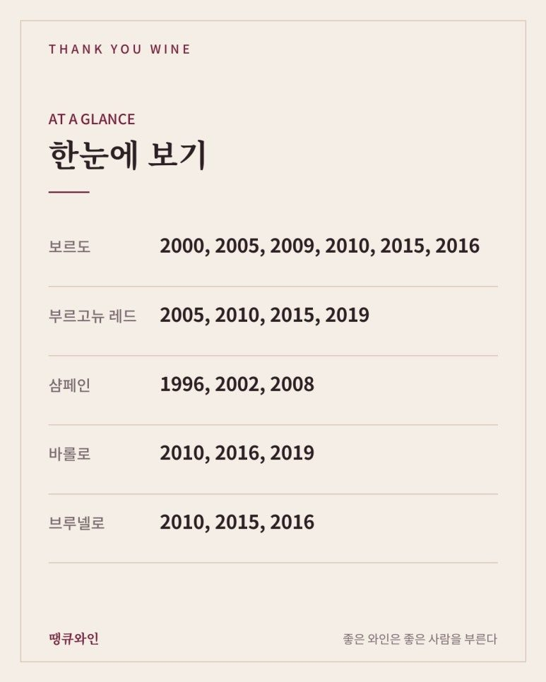
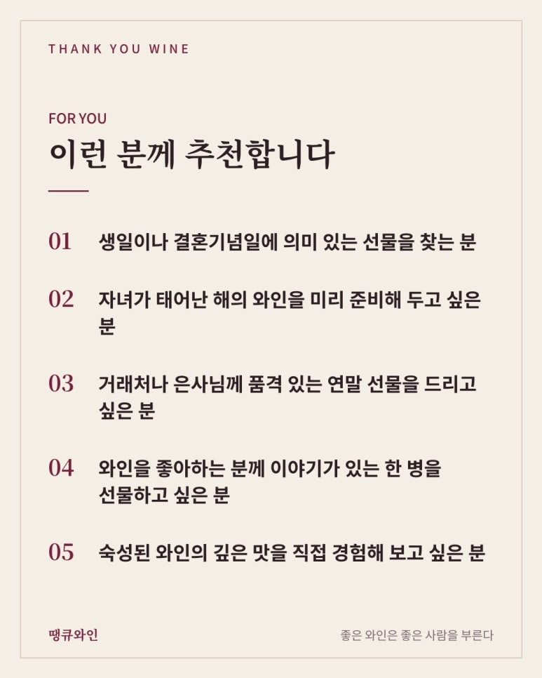

와인 빈티지 보는 법
선물용 와인, 좋은 해 고르는 그레이트 빈티지 총정리
선물용 와인은 좋은 해(그레이트 빈티지)를 고르면 이야기가 생겨요. 보르도는 2000·2005·2009·2010·2015·2016, 부르고뉴 레드는 2005·2010·2015·2019, 샴페인은 1996·2002·2008, 바롤로는 2010·2016·2019, 브루넬로는 2010·2015·2016이 대표적인 좋은 해예요.
선물할 와인을 고를 때, 가장 많이 받는 질문 중 하나가 있습니다.
“몇 년도 와인이 좋은 거예요?”
라벨에 적힌 숫자 하나가 와인의 분위기를 꽤 많이 바꿔 놓기 때문이죠.
특히 생일, 결혼기념일, 승진이나 은퇴처럼 의미 있는 날에 드리는 선물이라면 어떤 해의 와인인지가 곧 선물의 이야기가 됩니다.
오늘은 선물용 와인을 고를 때 알아두면 좋은 ‘그레이트 빈티지’를 산지별로 정리해 보았습니다.
연말 선물을 미리 준비하시는 분들께 도움이 되면 좋겠습니다.

한눈에 보는 산지별 그레이트 빈티지
• 보르도: 2000, 2005, 2009, 2010, 2015, 2016
• 부르고뉴 레드: 2005, 2010, 2015, 2019
• 샴페인: 1996, 2002, 2008
• 바롤로: 2010, 2016, 2019
• 브루넬로: 2010, 2015, 2016
그레이트 빈티지란 무엇일까?
빈티지(Vintage)는 와인을 만든 포도를 수확한 해를 말합니다.
포도는 농산물이라 해마다 날씨가 다르고, 그 차이가 그대로 와인에 담깁니다.
봄에 서리가 내리거나, 여름이 너무 덥거나, 수확철에 비가 많이 오면 포도의 품질이 떨어지죠.
반대로 포도가 천천히, 고르게 익고 수확철 날씨까지 맑았던 해에는 향, 산도, 타닌이 모두 균형 잡힌 와인이 나옵니다.
이렇게 날씨가 도와준 해 가운데서도, 산지 전체가 뛰어난 와인을 만든 해를 흔히 그레이트 빈티지라고 부릅니다.
그래서 그레이트 빈티지 와인은
좋은 날씨 + 균형 잡힌 맛 + 오래 숙성할 수 있는 힘
을 함께 갖춘 경우가 많습니다.
선물할 때 빈티지가 중요한 이유는?
선물용 와인에서 빈티지는 맛 이상의 의미를 갖습니다.
첫째, 이야기가 생깁니다.
받는 분이 태어난 해, 결혼한 해, 회사를 시작한 해의 와인은 그 자체로 특별한 의미가 됩니다.
둘째, 숙성의 즐거움이 있습니다.
좋은 해의 와인은 10년, 20년이 지나도 무너지지 않고 오히려 더 깊어지는 경우가 많습니다.
셋째, 시간이 지날수록 귀해집니다.
그레이트 빈티지 와인은 해가 갈수록 시장에서 점점 찾기 어려워집니다.
그래서 기념일 선물로 고르신다면 그 해가 어떤 평가를 받았는지 한 번쯤 확인해 보시는 것을 추천드립니다.

보르도는 어떤 해가 좋았을까?
보르도는 빈티지 이야기가 가장 많이 나오는 산지입니다.
와인 셀러 인사이더의 보르도 빈티지 차트에서는 2000년과 2016년에 99점, 2005년과 2009년에 98점, 2010년과 2015년에 97점을 주고 있습니다.
- 2000년: 새 천년을 연 해, 기념일 선물로도 이야기가 좋은 빈티지
- 2005년: 산지 전체, 가격대 전체에서 고르게 훌륭했다는 평가
- 2009년, 2010년: 연달아 찾아온 두 번의 좋은 해
- 2015년, 2016년: 지금 마시기 시작해도 좋고 더 숙성해도 좋은 빈티지
최근에는 2018년, 2019년, 2020년이 보르도 역사상 처음으로 3년 연속 좋은 해였다는 평가도 받고 있습니다.
부르고뉴는 어떤 해가 좋았을까?
부르고뉴는 피노 누아 한 품종으로 만들어 날씨의 영향을 특히 많이 받는 산지입니다.
영국의 와인 상인 파 빈트너스(Farr Vintners)는 부르고뉴 레드의 좋은 해로 이런 빈티지를 꼽습니다.
- 2005년: 진하고 힘 있는, 손꼽히는 그레이트 빈티지
- 2010년: 균형과 정밀함이 뛰어난 빈티지
- 2015년: 2005년 이후 최고라는 평가를 받는 풍성한 빈티지
- 2019년: 잘 익은 과실과 산뜻함을 함께 갖춘 빈티지
부르고뉴는 같은 해라도 생산자에 따라 차이가 커서, 믿을 만한 생산자를 함께 고르는 것이 중요합니다.
샴페인은 어떤 해가 좋았을까?
샴페인은 대부분 여러 해의 와인을 섞어 만드는 논빈티지(NV)입니다.
그래서 라벨에 연도가 적힌 빈티지 샴페인은 아주 좋은 해에만 만들어집니다.
그중에서도 1996년, 2002년, 2008년은 샹파뉴의 전설적인 빈티지로 자주 이야기됩니다.
영국의 와인 상인 베리 브라더스 앤 러드(Berry Bros. & Rudd)는 2008년을 샹파뉴 역사상 최고의 빈티지 중 하나로 꼽으며, 조화와 균형 면에서는 1996년, 2002년보다 더 뛰어나다고 평가했습니다.
내년에 성인이 되는 2008년생 자녀에게 태어난 해의 샴페인을 선물하는 것도 좋은 방법입니다.
이탈리아 와인은 어떤 해가 좋았을까?
이탈리아의 대표적인 장기 숙성 와인인 바롤로와 브루넬로 디 몬탈치노도 빈티지에 따라 평가가 크게 달라집니다.
• 바롤로 2010년: 구조감과 균형, 긴 숙성력을 갖춘 전설적인 빈티지
• 바롤로 2016년: 클래식한 스타일의 뛰어난 빈티지
• 브루넬로 2015년, 2016년: 우아함과 깊이를 함께 갖춘 빈티지
두 와인 모두 출시 전 오랜 숙성을 거치기 때문에, 선물 받은 분이 몇 년 더 보관하며 즐기기에도 좋습니다.
그레이트 빈티지 와인, 이렇게 고르세요
빈티지만 보고 고르면 생각과 다른 와인을 만날 수도 있습니다.
선물용으로 고를 때는 이 네 가지를 함께 확인해 보세요.
- 산지마다 좋은 해가 다르다: 보르도의 좋은 해가 부르고뉴에서도 좋은 해는 아닐 수 있습니다
- 생산자가 빈티지만큼 중요하다: 좋은 생산자는 어려운 해에도 좋은 와인을 만듭니다
- 마시기 좋은 시기를 확인한다: 너무 어린 그레이트 빈티지는 아직 맛이 닫혀 있을 수 있습니다
- 보관 상태를 확인한다: 오래된 와인일수록 어디서 어떻게 보관됐는지가 중요합니다
예산이 고민된다면, 그레이트 빈티지 해에 만든 세컨드 와인이나 주변 마을 와인을 고르는 것도 좋은 방법입니다.
같은 해의 좋은 날씨를 담고 있으면서도 부담은 훨씬 덜하거든요.
그레이트 빈티지 와인, 이런 분께 추천합니다
- 생일이나 결혼기념일에 의미 있는 선물을 찾는 분
- 자녀가 태어난 해의 와인을 미리 준비해 두고 싶은 분
- 거래처나 은사님께 품격 있는 연말 선물을 드리고 싶은 분
- 와인을 좋아하는 분께 이야기가 있는 한 병을 선물하고 싶은 분
- 숙성된 와인의 깊은 맛을 직접 경험해 보고 싶은 분

자주 묻는 질문
A. 같은 해의 다른 산지 와인을 찾아보거나, 빈티지 포트, 샴페인처럼 오래 보관할 수 있는 와인으로 넓혀 보는 것도 방법입니다.
결국 선물용 와인의 핵심은 ‘그 해의 이야기’입니다 그레이트 빈티지 와인은 좋은 날씨와 정성이 함께 만든 한 병입니다. 그리고 그 숫자가 받는 분의 소중한 해와 겹치는 순간, 와인은 단순한 선물이 아니라 기억이 됩니다. 그래서 저는 그레이트 빈티지 와인을
“시간을 함께 선물하는 와인”
이라고 소개하고 싶습니다.
올해 연말 선물을 고민하고 계신다면, 받는 분에게 의미 있는 해를 먼저 떠올려 보세요.
그 해에 어울리는 와인은 땡큐와인에서 함께 찾아드리겠습니다.
이 글은 땡큐와인 네이버 블로그에 먼저 올린 글이에요.